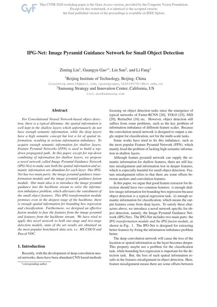

IPG-Net: Image Pyramid Guidance Network for Small Object Detection

Abstract
For Convolutional Neural Network-based object detection, there is a typical dilemma: the spatial information is well kept in the shallow layers which unfortunately do not have enough semantic information, while the deep layers have a high semantic concept but lost a lot of spatial information, resulting in serious information imbalance. To acquire enough semantic information for shallow layers, Feature Pyramid Networks (FPN) is used to build a top-down propagated path.
In this paper, except for top-down combining of information for shallow layers, we propose a novel network called Image Pyramid Guidance Network (IPG-Net) to make sure both the spatial information and semantic information are abundant for each layer. IPG-Net has two main parts: the image pyramid guidance transformation module and the image pyramid guidance fusion module. Our main idea is to introduce the image pyramid guidance into the backbone stream to solve the information imbalance problem, which alleviates the vanishment of small object features. The transformation module promises that even in the deepest stage of the backbone there is enough spatial information for bounding box regression and classification.
We applied this network to both one-stage and two-stage detection models, obtaining state-of-the-art results on the most popular benchmarks, MS COCO and Pascal VOC.
Paper

Ziming Liu, Guangyu Gao, Lin Sun, Li Fang.
IPG-Net: Image Pyramid Guidance Network for Small Object Detection.
IEEE/CVF Conference on Computer Vision and Pattern Recognition (CVPR) Workshops, 2020.
BibTeX
@inproceedings{liu2020ipg,
title = {IPG-Net: Image pyramid guidance network for small object detection},
author = {Liu, Ziming and Gao, Guangyu and Sun, Lin and Fang, Li},
booktitle = {IEEE/CVF Conference on Computer Vision and Pattern Recognition (CVPR) Workshops},
pages = {1026--1027},
year = {2020},
organization = {IEEE}
}